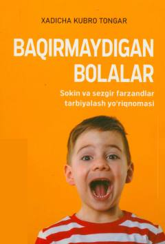

BBFarzandlarni baqirmasdan, sokin va sezgir ruhda tarbiyalash yo'riqnomasi.
Ushbu kitob ota-onalarga farzandlarini tinch va sezgir ruhda tarbiyalash, ularga baqirmasdan munosabat o'rnatish yo'riqnomalarini taqdim etadi. Muallif oiladagi tushunmovchiliklar, itoatsizlik va boshqa muammolarni bartaraf etishning samarali usullarini ochib beradi.